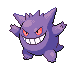

-
Bulbassauro #001Lv. 01

- Grama
- Veneno
Há uma semente de planta em suas costas desde o dia que este pokemon nasce. A semente cresce lentamente.
-
Ivyssauro #002Lv. 16

- Grama
- Veneno
Quando o bulbo em suas costas cresce, parece perder a capacidade de ficar d e pé em suas patas traseiras.
-
Venossauro #003Lv. 32

- Grama
- Veneno
Sua planta floresce quando está absorvendo energia solar. Ele fica em movimento para buscar a luz solar.
-
Charmander #004Lv. 01

- Fogo
Tem preferência por coisas quentes. Quando chove, diz-se que o vapor jorra da ponta da cauda.
-
Charmeleon #005Lv. 16

- Fogo
Tem uma natureza bárbara. Em batalha, ele chicoteia sua cauda ardente e corta com garras afiadas.
-
charizard #006Lv. 36

- Fogo
Ele cospe fogo que é quente o suficiente para derreter pedregulhos. Pode causar incêndios florestais ao soprar chamas.
-
Squirtle #007Lv. 01

- Água
Quando retrai seu pescoço longo em sua concha, ele esguicha água com força vigorosa.
-
wartortle #008Lv. 16

- Água
Quando retrai seu pescoço longo em sua concha, ele esguicha água com força vigorosa.
-
Blastoise #009Lv. 32

- Água
Ele esmaga seu inimigo sob seu corpo pesado para causar desmaios. Em um beliscão, ele se retirará dentro de sua concha.
-
Caterpie #010Lv. 01

- Inseto
Para proteção, ele libera um mau cheiro horrível da antena em sua cabeça para afastar os inimigos.
-
Lugia #010Lv. 45

- Psíquico
As asas de Lugia têm um poder devastador - um leve bater de asas pode destruir casas comuns. Como resultado, este Pokémon escolhe viver fora da vista nas profundezas do mar.
-
Ninetales #010Lv. 20

- Fogo
Diz-se que vive 1.000 anos, e cada uma de suas caudas é carregada de poderes sobrenaturais.
-
Lucario #010Lv. 25

- Lutador
- Metal
Diz-se que nenhum inimigo pode permanecer invisível para Lucario, uma vez que pode detectar auras - mesmo aquelas de inimigos que não poderia ver de outra forma.
-
Lapras #010Lv. 30

- Água
- Gelo
Um Pokémon inteligente e de bom coração, ele desliza pela superfície do mar enquanto sua bela canção ecoa ao seu redor.
-
Gengar #094Lv. 25
- Fantasma
- Veneno
Para roubar a vida de seu alvo, ele escorrega na sombra da presa e silenciosamente espera por uma oportunidade.